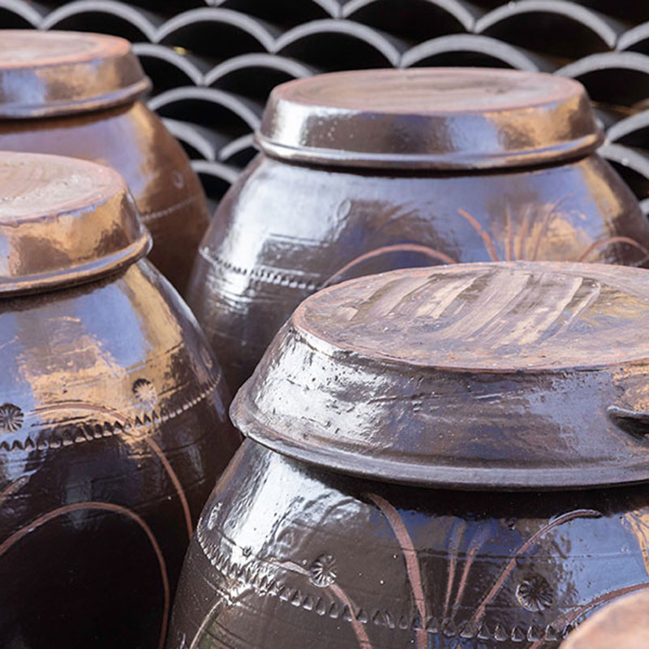
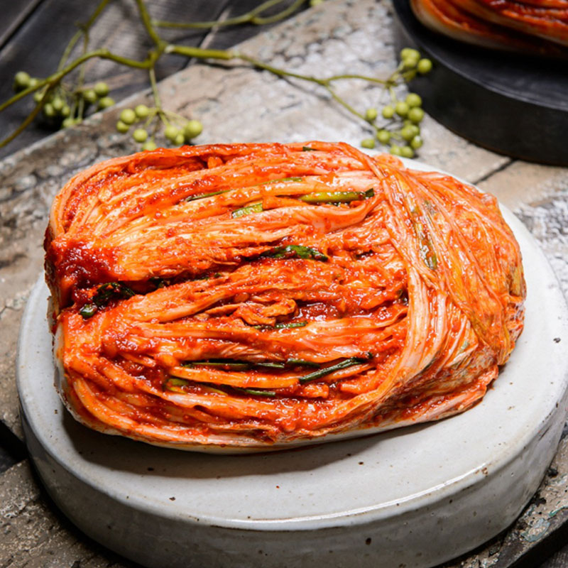
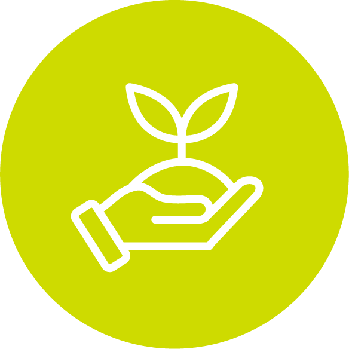
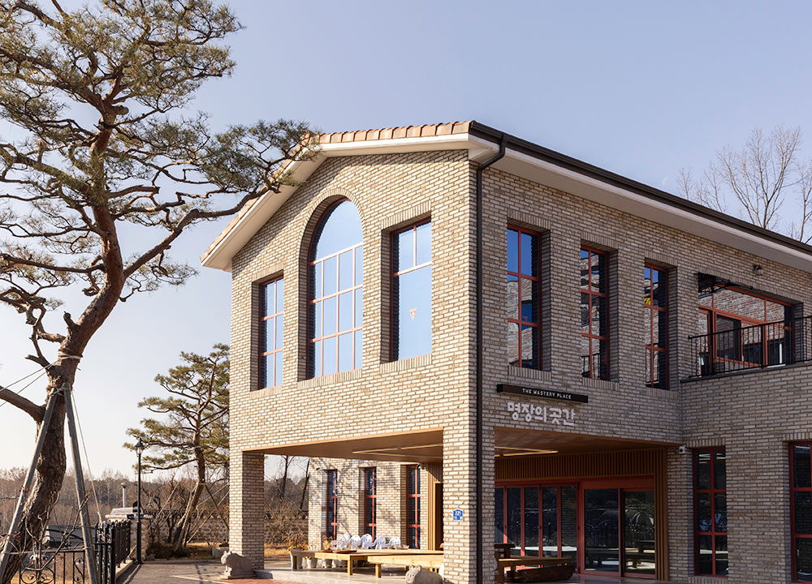
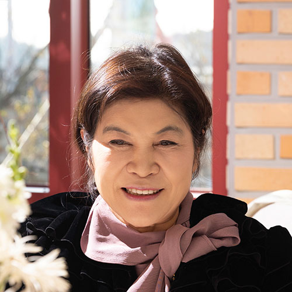
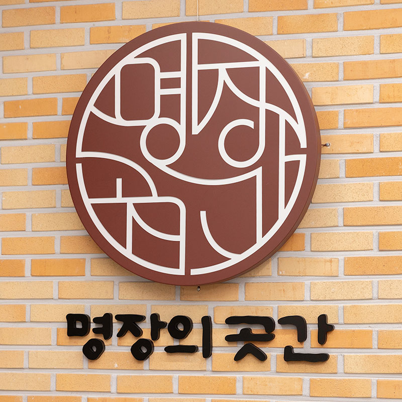
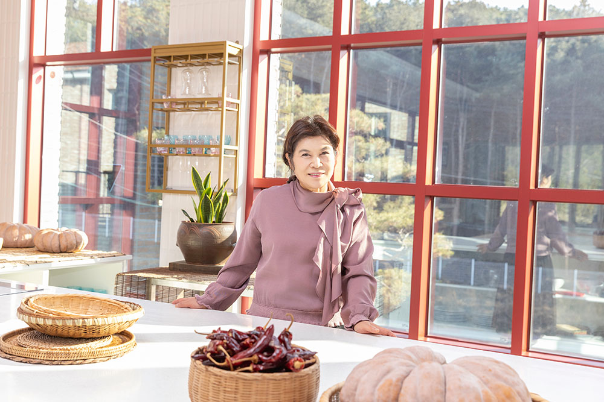

박미희 명장이 지켜온 기준은 거창한 철학이 아니라, 매일 같은 마음으로 현장을 대하는 태도였다. 공장은 커졌지만 방식은 바뀌지 않았고, 규모보다 재료를,속도보다 과정을 택했다. 20년 동안 흔들리지 않은 선택들은 결국 소비자에게 ‘믿고 또다시 구매하고 싶은 김치’라는 신뢰로 이어졌다.
현장이 키운 공장
박미희 명장은 2005년 김치 제조회사 ‘도미솔식품’을 창업한 이후, 지금까지 김치 제조 한 길만을 걸어왔다. 창업 초기에는 황토방 장독대를 이용해 하루 100포기 남짓의 김치를 담그던 작은 규모였지만, 현재는 하루 평균 30톤, 최대 80톤까지 생산할 수 있는 공장으로 성장했다. 그러나 처음부터 ‘대형 공장’을 목표로 한 것은 아니었다. 오히려 창업 당시 그녀의 구상은 가내수공업에 가까웠다. 어릴 적부터 아버지의 사업을 지켜보며 자라온 그녀는, 사업이 얼마나 고단하고 끝이 보이지 않는 일인지 누구보다 잘 알고 있었기 때문이다. 전환점은 뜻밖의 사건에서 찾아왔다.
“한 김치 업체의 해충 사고 이후 HACCP(해썹) 의무화가 시행되면서, 예전 방식으로는 김치를 만들 수 없게 됐어요. 기준에 맞는 시설을 하나둘 갖추다 보니 공장은 점점 커졌고, 그러다 보니 생산도 자연스럽게 산업화 단계로 이어지게 됐죠.”
규모는 커졌지만 김치를 제조하는 방식은 크게 달라지지 않았다. 김치 산업이 장치 산업이기보다 노동집약적인 산업이라는 점을 누구보다 잘 알고 있었던 박미희 명장은, 자동화 설비에 대규모 투자를 감행하기보다는 경험을 통해 터득한 공정과 흐름을 생산 설비에 적용해 왔다. 그렇게 ‘조금씩 나아진 현장’이 차곡차곡 쌓이며, 오늘의 도미솔식품으로 이어졌다.


박미희 명장 도미솔식품 김치의 특징

식품첨가물 무첨가
다시마·홍합·멸치·사과 등 자연 재료 사용
아삭한 식감과 시원한 맛 유지

좋은 재료를 포기하지 않는다는 선택
김치 산업은 구조적으로 쉽지 않은 분야다. 신선한 채소를 원재료로 사용하는 만큼 가격 변동성이 크고, 중국산 김치의 영향으로 판매가는 낮게 형성돼 있다. 이 때문에 원가 절감을 위해 재료의 질을 낮추는 선택이 반복되기 쉽다. 그러나 박미희 명장은 ‘좋은 재료’로 김치를 만들어야 한다는 신념만은 놓지 않는다. 도미솔식품이 지금의 규모로 성장할 수 있었던 배경에는, 이 같은 선택을 오랜 시간 흔들림 없이 이어온 고집이 자리하고 있다.
그 철학은 ‘육수’에서 분명하게 드러난다. 잔탄검 등 식품첨가물을 사용하지 않고, 다시마·홍합·멸치·사과 등 자연 재료로 직접 끓인 육수를 고집한다. 이 육수 제조 방식은 특허로도 등록돼 있으며, 김치의 시원한 맛과 아삭한 식감을 오래 유지하는 기반이 된다. 배추 관리 역시 같은 맥락이다.
“우리나라는 사계절이 뚜렷하잖아요. 겨울에는 해남이나 진도 배추를 쓰고, 여름에는 강원도 배추를 사용해요.봄·가을에는 준고랭지 배추를 쓰다 보니 계절마다 배추의 두께나 결, 단맛이 다 달라요. 그래서 균일한 김치를만들려면 배추가 가장 맛있을 때 많이 저장해 두고, 그좋은 배추를 1년 내내 쓰려고 계속 노력하고 있습니다.” 이처럼 좋은 재료를 포기하지 않는 선택은, 한 번 맛본도미솔식품의 김치를 다시 찾게 만드는 힘이 됐다. 그 선택들이 쌓여 도미솔식품은 ‘김치 제품’을 넘어 소비자의신뢰를 얻은 ‘김치 브랜드’로 자리 잡았다.

박미희
대한민국 식품가공 명장
√ 2024년 식품가공 분야


명장은 하루아침에 만들어지지 않는다
박미희 명장은 2024년 대한민국 식품가공 분야 명장에 선정됐고, 이어 명인으로도 이름을 올렸다. 그러나 그녀는 이 타이틀을 특별한 성과로 이야기하지 않는다. 오히려 이를 ‘오랜 시간 준비해온 결과’라고 담담하게 설명한다. 박미희 명장에게 명장이라는 이름은, 그가 쌓아온 시간 위에서 앞으로 무엇을 어떻게 해 나갈 것인가를 묻는 이름에 가깝다. 머무는 지점이 아니라, 다시 현장으로 돌아가게 하는 출발점인 셈이다.
“지금도 강연이나 현장 방문을 하면서 후배 기술인들을 계속 만나고 있어요. 김치 이야기만 하는 게 아니라, 한 분야에서 최고가 되기까지 어떤 태도로 시간을 견뎌야 하는지 그런 얘기들도 많이 하고요. 무엇보다 중요한 건 나 자신을 위해 꾸준히 노력하고 준비하는 ‘꾸준함’이라고 생각합니다.”
현재의 자리에서 여전히 묵묵히 역할을 이어가고 있는 박미희 명장의 꿈은 단순하다. ‘지금처럼 잘 지켜나가는 것’이다.
“앞으로는 후배들에게 조금이라도 더 길잡이가 될 수 있는 역할을 하고 싶고요. 또 하나는 명장이라는 이름에 휘둘리지 않고, 저 자신을 잘 지키는 거예요. 꿈이라고 해도 거창한 건 없어요. 지금 이 상태를 잘 지켜나가면서, 큰 탈 없이 할 수 있는 만큼 봉사도 하고, 명장으로서 제 손이 닿아서 해야 할 일이 있다면 하나씩 해 나가고 싶습니다.”
명장으로서 해야 할 일이 있다면 묵묵히 해내고, 자신의 자리를 과시하지 않는 것. 그 소박한 태도야말로 박미희 명장이 20년 넘게 김치를 만들어온 방식이자, 지금도 여전히 그가 현장에 머무는 이유다.